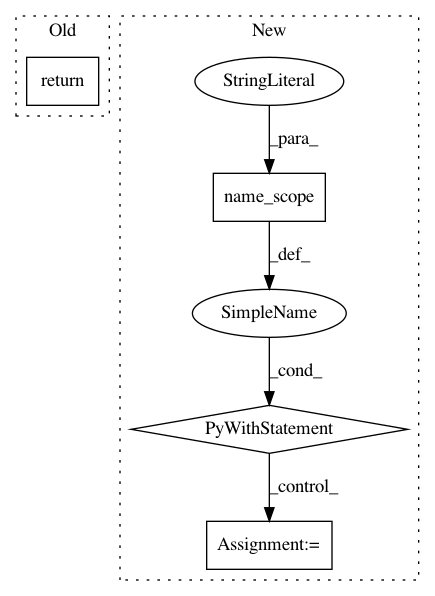

58f4620699ac8e8eecbc0746dfcc8a497f01d6ba,tensorlayer/activation.py,,leaky_relu,#Any#Any#Any#,42
Before Change
// m_x = tf.nn.relu(-x)
// x -= alpha * m_x
x = tf.maximum(x, alpha * x, name=name)
return x
def swish(x, name="swish"):
Swish function.
After Change
if not (0 < alpha <= 1):
raise ValueError("`alpha` value must be in [0, 1]`")
with tf.name_scope(name, "leaky_relu") as name_scope:
x = tf.convert_to_tensor(x, name="features")
return tf.maximum(x, alpha * x, name=name_scope)
def leaky_relu6(x, alpha=0.2, name="leaky_relu6"):
:func:`leaky_relu6` can be used through its shortcut: :func:`tl.act.lrelu6`.
This activation function is a modified version :func:`leaky_relu` introduced by the following paper:
In pattern: SUPERPATTERN
Frequency: 3
Non-data size: 4
Instances
Project Name: tensorlayer/tensorlayer
Commit Name: 58f4620699ac8e8eecbc0746dfcc8a497f01d6ba
Time: 2018-06-08
Author: contact@jonathandekhtiar.eu
File Name: tensorlayer/activation.py
Class Name:
Method Name: leaky_relu
Project Name: NifTK/NiftyNet
Commit Name: 09f72ac06873b4069b8fddad769be3f1148a5791
Time: 2017-08-10
Author: wenqi.li@ucl.ac.uk
File Name: niftynet/application/segmentation_application.py
Class Name: SegmentationApplication
Method Name: connect_data_and_network
Project Name: keras-team/keras
Commit Name: c30223e510486179282b3480fc923dcb9863e3d2
Time: 2019-03-07
Author: francois.chollet@gmail.com
File Name: keras/backend/tensorflow_backend.py
Class Name:
Method Name: learning_phase